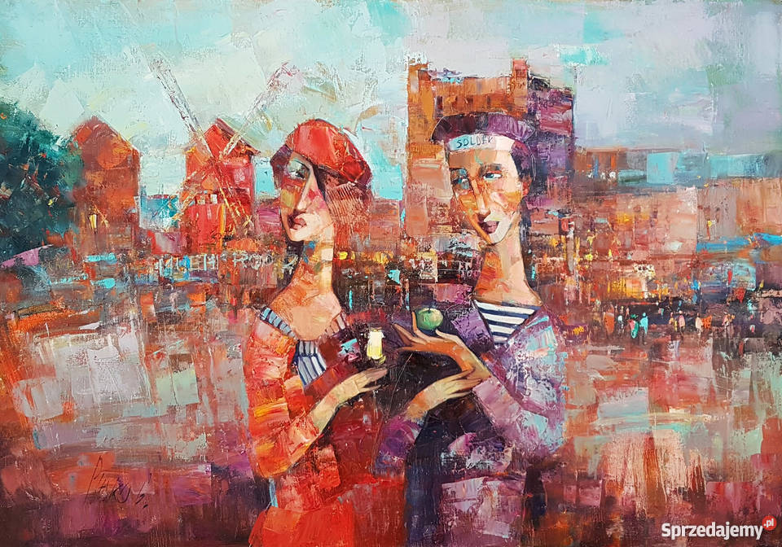
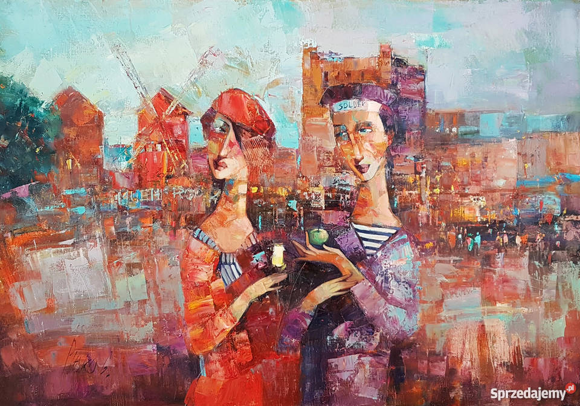

Secret doors
Strona główna
Muzyka
Na duzym ekranie
Ksiązki
Recenzje
Wydarzenia kulturalne
O stronie
Kontakt

 


O stronie słów kilka
“One of the strongest motives that lead men to art and science is escape from everyday life with its painful crudity and hopeless dreariness, from the fetters of one's own ever-shifting desires. A finely tempered nature longs to escape from the personal life into the world of objective perception and thought.” ― Albert Einsteinczytaj dalej